Modeling & Actuator Sizing
Once we had a rough idea of Nudge’s size, wheel layout, and the way it would interact with people, the next step was to determine the actuators that would drive the joints.
To determine the required actuator torques and speeds without actually building Nudge, we would need to model Nudge and simulate different situations and load cases that we could expect it to see. Half because I wanted to learn, and half because I didn’t know how much detail to model in, I started with a simpler model, then added complexity to address some of the model’s shortcomings, and only when a specific design question needed to be answered.
1. Starting with a Simplified Model
1.1 Newton–Euler Model
I started by treating Nudge as a simplified wheeled inverted pendulum, with the body represented as a point mass at a fixed distance above the wheel axle. Using Newton–Euler equations, I could relate the wheel torque, horizontal acceleration, and body pitch to get a first approximation of how Nudge would behave.
The model was useful for understanding the basic dynamics, but it made several assumptions that weren't representative of the actual design. Most notably, it neglected the distributed masses and rotational inertias of the wheels and body, and assumed a fixed center of mass relative to the axle.
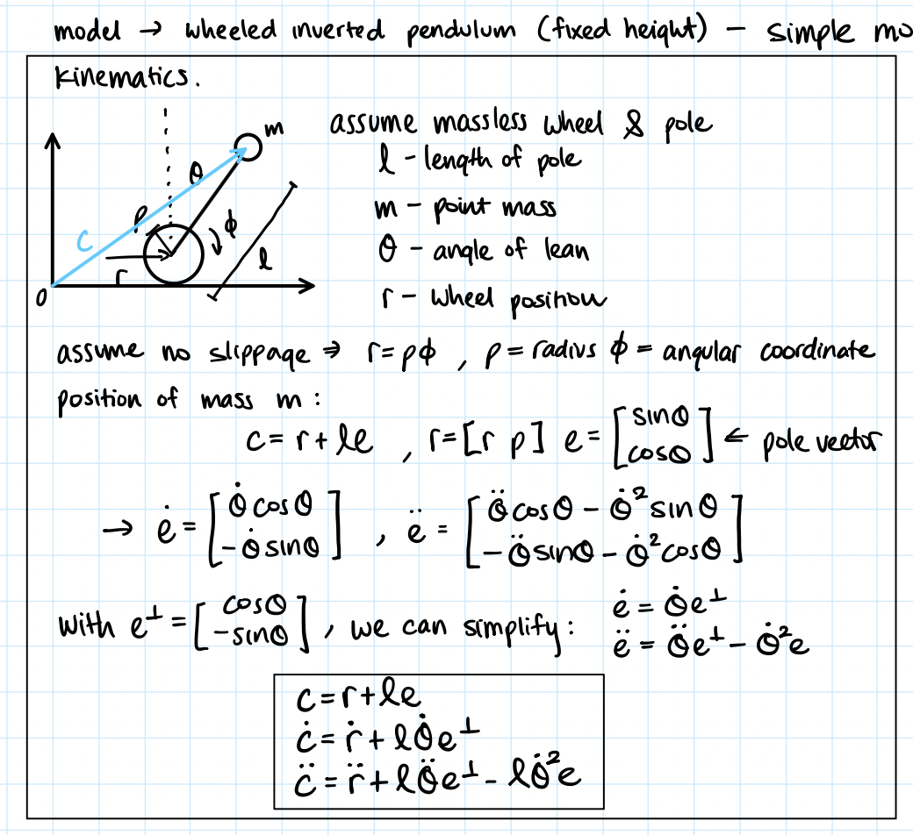
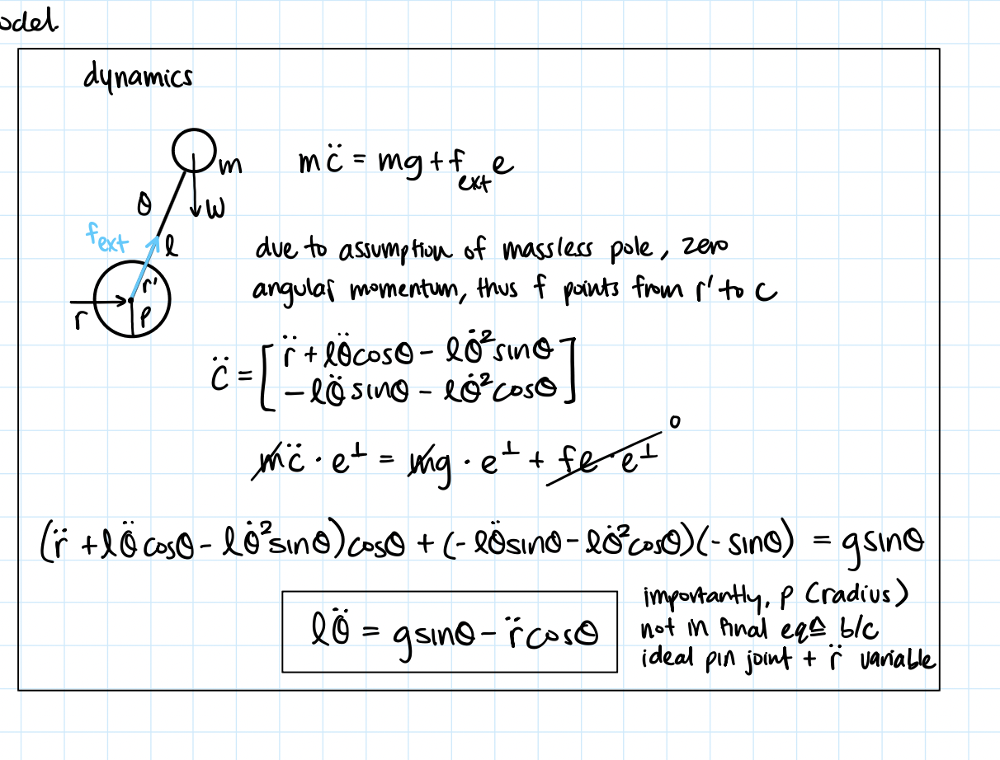
2. Developing a More Representative Model
2.1 Lagrangian Formulation
To address these shortcomings, I developed a new kinematic model that accounted for the different masses and inertias of the system. I used a Lagrangian formulation because it provided a convenient way to derive the equations of motion and incorporate additional degrees of freedom as the model became more complex.
For the initial formulation, I kept the body height fixed and described the system using two generalized coordinates: horizontal wheel displacement r and body pitch angle θ .
Using the kinetic and potential energies of the system, I derived the equations of motion through the Euler–Lagrange equation:
Here, L is the Lagrangian and Qᵢ represents the generalized forces acting on the system. The resulting equations could be written in the standard manipulator form:
This provided a more flexible starting point for modeling Nudge's dynamics while retaining a relatively simple two-degree-of-freedom system.
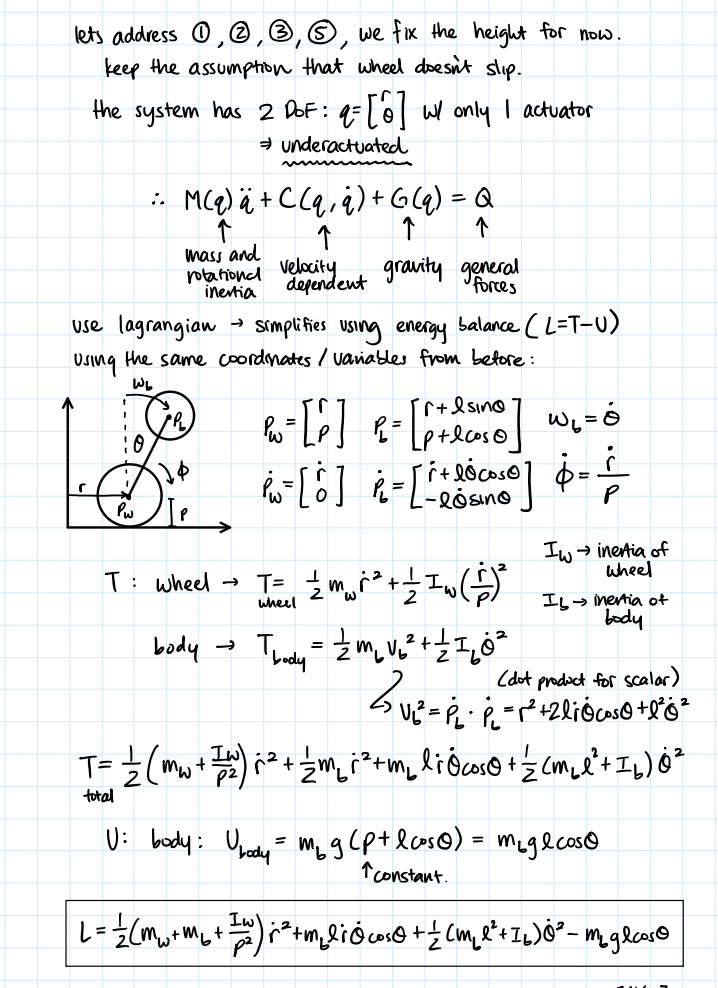
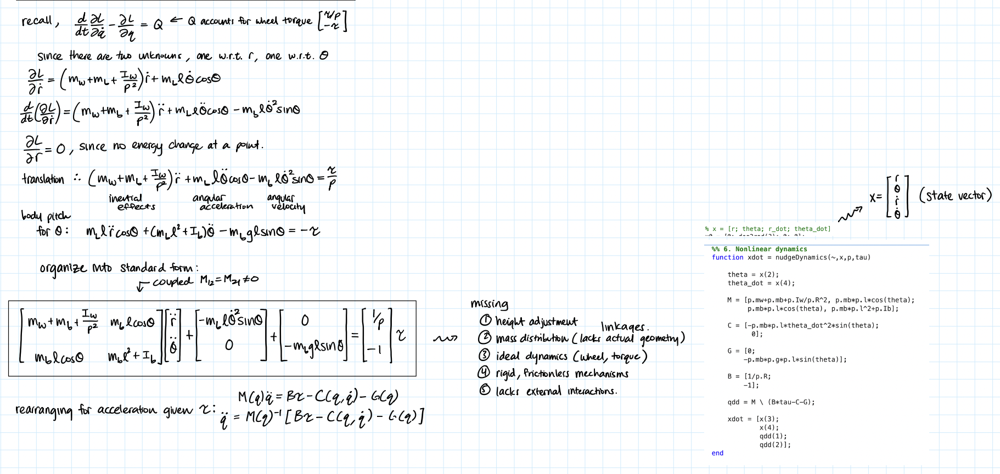
2.2 Linearization and State-Space Representation
With the nonlinear equations of motion derived, I linearized the system around its upright equilibrium. This allowed me to express the dynamics in state-space form and use standard linear control techniques.
Here, u represents the applied wheel torque. Using estimated mass and geometry parameters, I calculated the state-space matrices in MATLAB, providing a basis for feedback control and disturbance simulations.
2.3 LQR Controller
To stabilize the model, I implemented a Linear Quadratic Regulator (LQR), which calculates a feedback gain by minimizing a cost function that penalizes state deviations and control effort.
The weighting matrices Q and R determine the relative importance of maintaining the desired state and limiting the applied wheel torque. The controller stabilized the model following an initial pitch disturbance. I didn't spend much time tuning it, since my main objective was to estimate actuator requirements rather than optimize balancing performance.
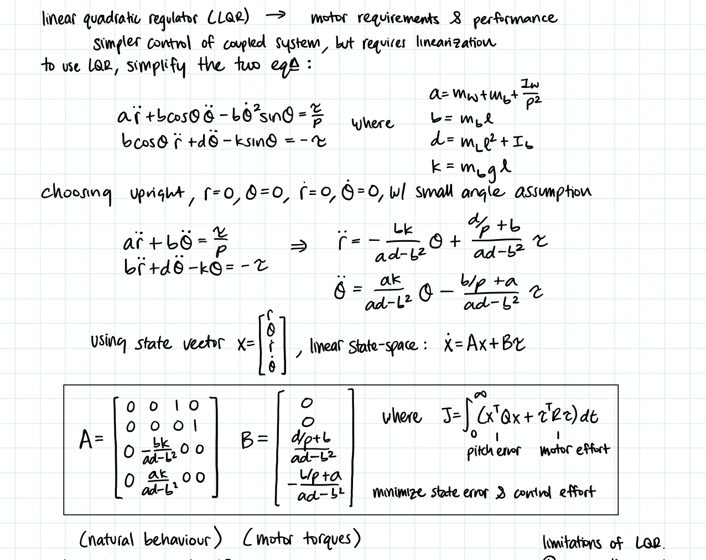
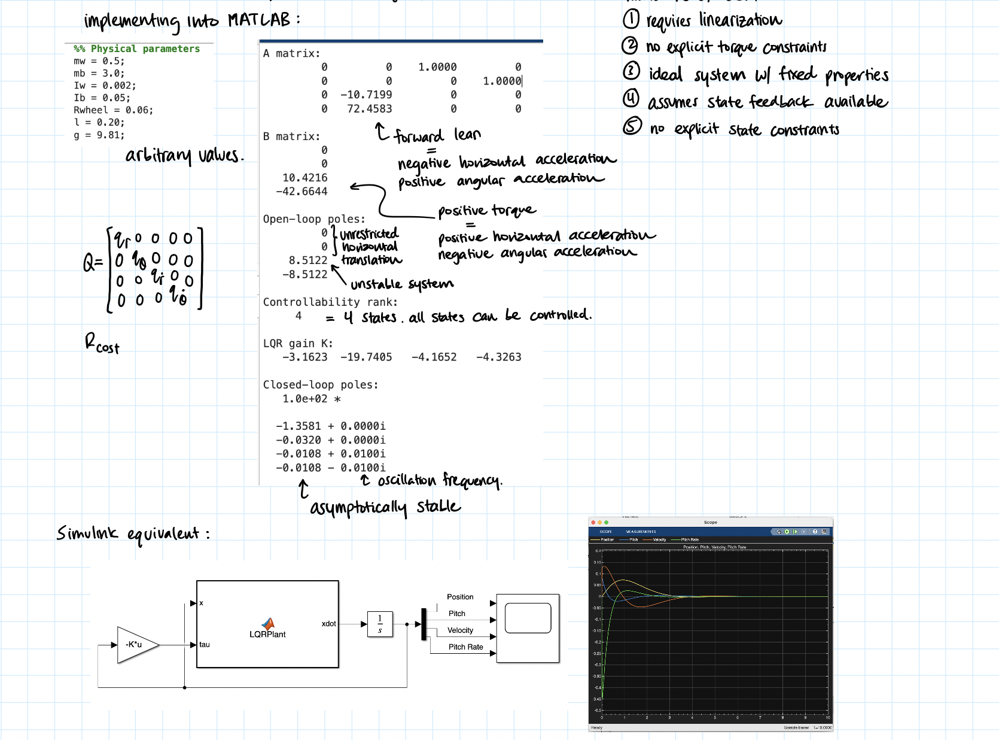
3. Refining the Model
3.1 Variable Height and External Disturbances
With a working controller, I began extending the model to better represent how Nudge would operate. Two important additions were the ability to change the body's height and the inclusion of external forces acting on the robot.
I introduced a variable body height, h(t) , to account for the motion of Nudge's legs. This meant that the body's center of mass was no longer fixed relative to the wheel axle, and its vertical motion would influence the system's dynamics.
I also introduced an external force disturbance into the equations of motion, allowing me to simulate forces acting on Nudge independently of wheel torque. These additions gave me a more general model, although they also increased the complexity of the equations and simulations.
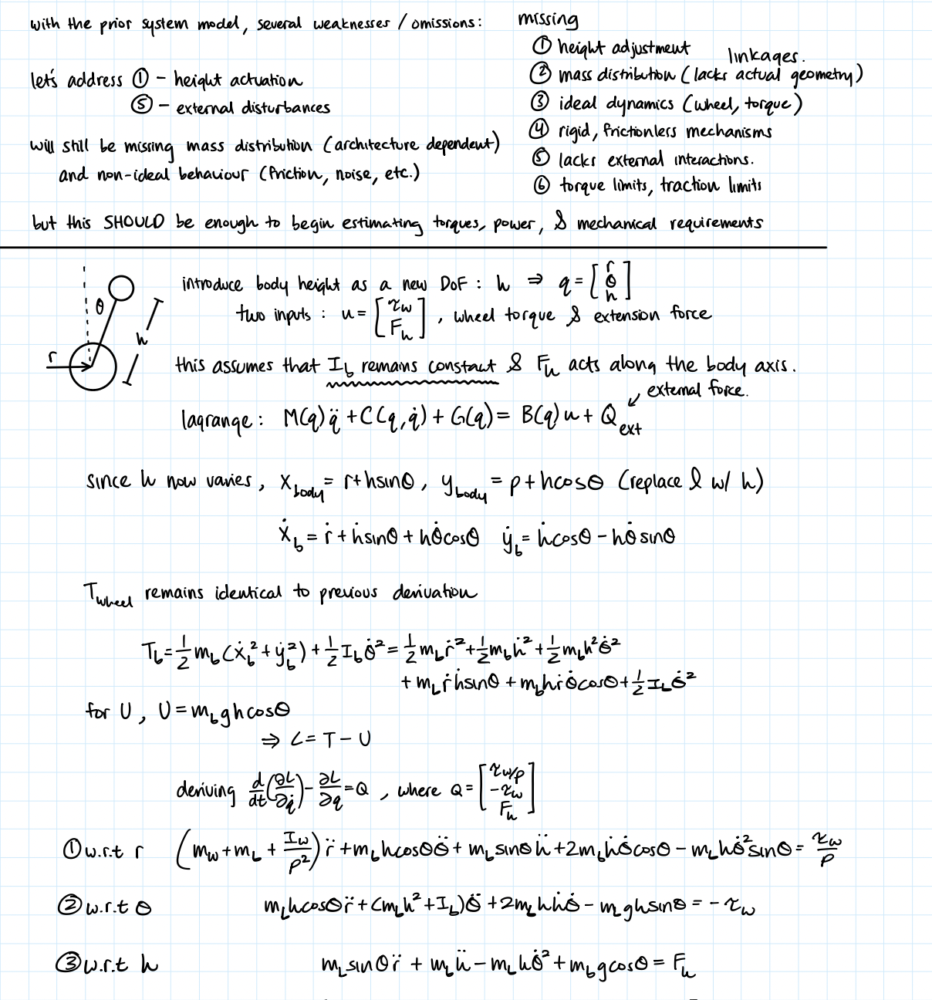
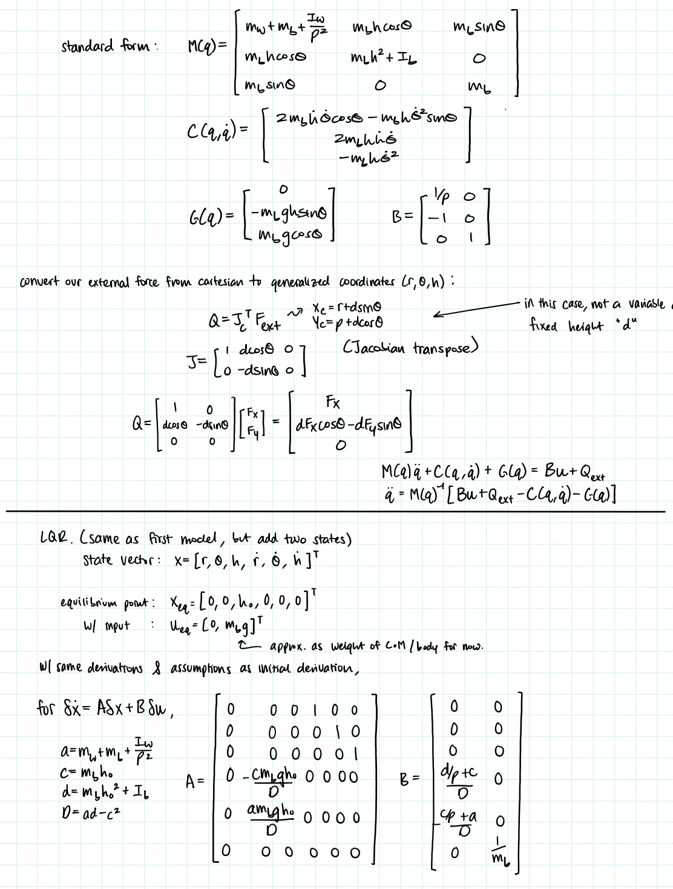
3.2 Updating the Mass and Inertia Model
Around this time, the rest of Nudge's mechanical architecture was beginning to take shape. We had moved toward a bulbous body supported by two large wheels, with the leg mechanisms and actuators enclosed inside the wheels.
I updated the model to distinguish between three main components: the rotating wheel rims , the stationary internal frames , and the moving body . The rims contributed rotational inertia about the axle, while the internal frames carried the actuators without spinning with the rims. The body contributed its own mass and inertia, with its position determined by the leg height.
Separating these components allowed me to use more realistic mass and inertia estimates from our developing CAD models rather than treating the robot as a single concentrated mass.
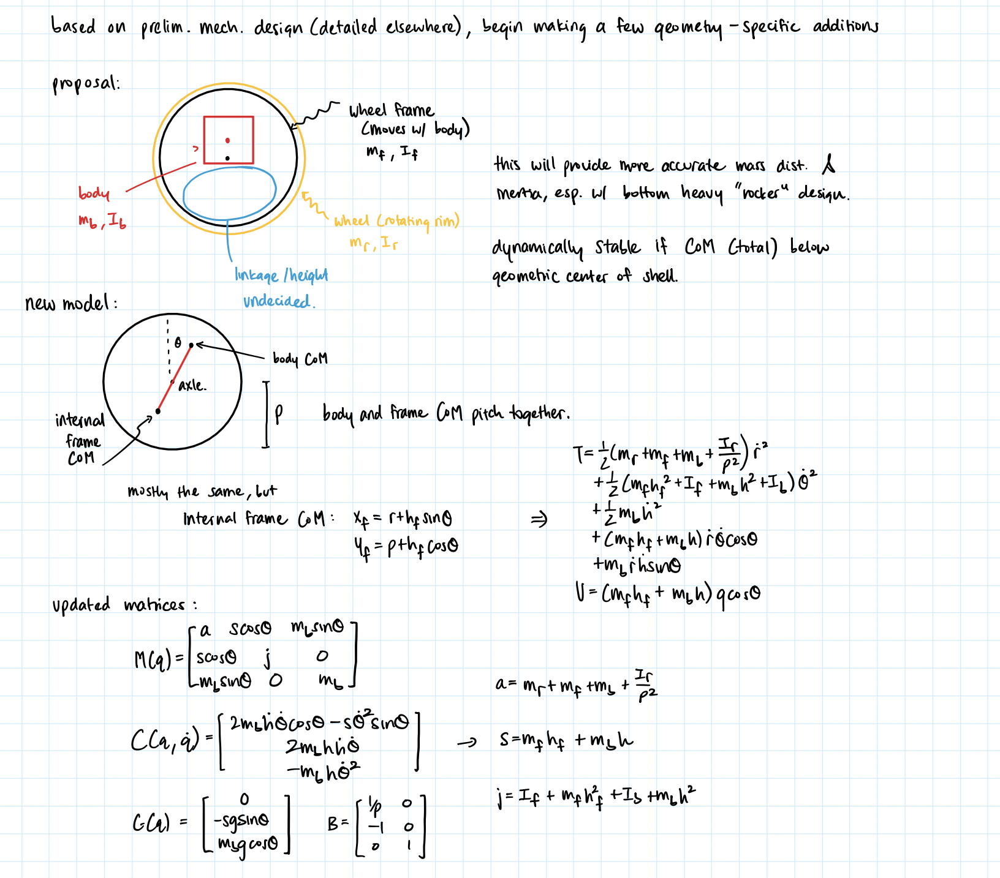
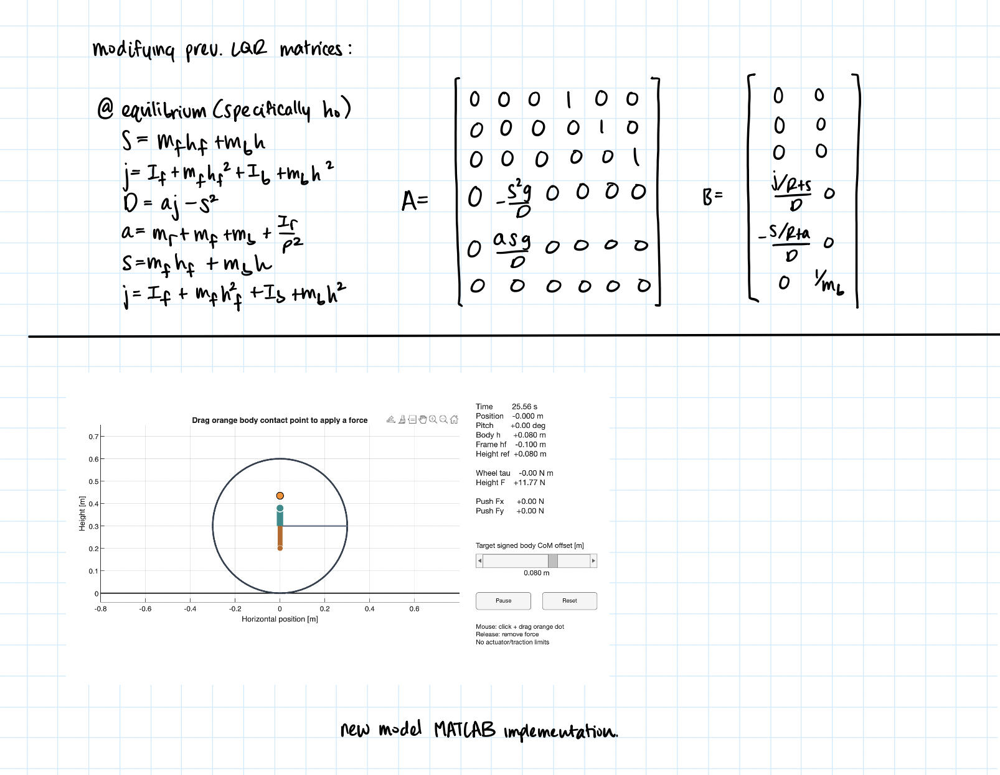
3.3 Simplifying the Height Adjustment
Although I had introduced variable height into the model, I began questioning whether it was necessary for actuator sizing. Nudge wasn't intended to make rapid or continuous height adjustments. Its height actuators would spend much of their time stationary, with relatively slow movements used for expression and positioning.
There was also a practical simulation issue. Because I hadn't imposed physical limits on height, and the controller didn't heavily penalize deviations in that state, some initial simulations allowed the body to accelerate upward unrealistically, effectively flying away from the wheel assembly. The resulting motion and inertia effects overwhelmed the rest of the simulated response. This was a consequence of the unconstrained model, not a behavior I expected from the real robot.
Rather than model the full coupled wheel and height-actuator dynamics, I decided to evaluate wheel torque requirements at several fixed body heights . This would show how the center-of-mass position affected the system without requiring a complete leg-actuator and constraint model.
3.4 Final Model and Limitations
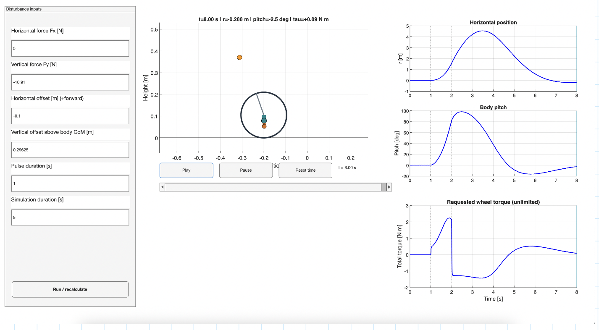
The final model used for wheel actuator sizing was a fixed-height wheeled inverted pendulum with the more detailed masses and inertias of the rotating rims, stationary frames, and moving body. It retained the external force disturbance input, allowing me to evaluate wheel torque under different loading conditions.
Several non-ideal effects were not included in the model:
- Mechanical losses: Bearing friction, transmission losses, and other resistive effects.
- Actuator characteristics: Rotor inertia, motor dynamics, and electrical limitations.
- Wheel–ground interaction: Traction limits, tire deformation, and slipping.
- Physical constraints: Joint travel limits, actuator speed limits, and torque saturation.
The main reason was time, along with a lack of reliable parameters for some of these effects.
Fortunately, the initial simulations produced relatively modest torque requirements. Although the unconstrained controller could theoretically request more torque or speed than a real motor could deliver, the simulated demands did not suggest that saturation would dominate the cases I was studying. I decided that this level of detail, combined with reasonable loss estimates and safety margins, was sufficient for an initial sizing exercise.
We also had some flexibility because Nudge's architecture and requirements were still being developed. Rather than treating the simulation as a final validation, I used it to guide actuator selection and identify what would need to be checked once we had hardware.
4. Sizing the Wheel Actuators
4.1 Estimating Mass and Inertia
Before running the finalized MATLAB model, I needed estimates for Nudge's wheel, body, and frame masses and inertias, along with its wheel radius and equilibrium body height.
We wanted a small, approachable robot that could be picked up and comfortably interact with people. Based on its intended contact height, comparable home robots, and packaging needs, we settled on a roughly 275 × 275 mm footprint and 300 mm nominal height.
I then broke Nudge into three main components: the rotating wheel rims, the internal frames containing the actuators, and the moving body. Using preliminary CAD geometry, estimated material densities, and an electronics component list, I approximated their masses, centers of mass, and rotational inertias.
Because the design was still evolving, these were simplified CAD and component estimates rather than measured mass properties.
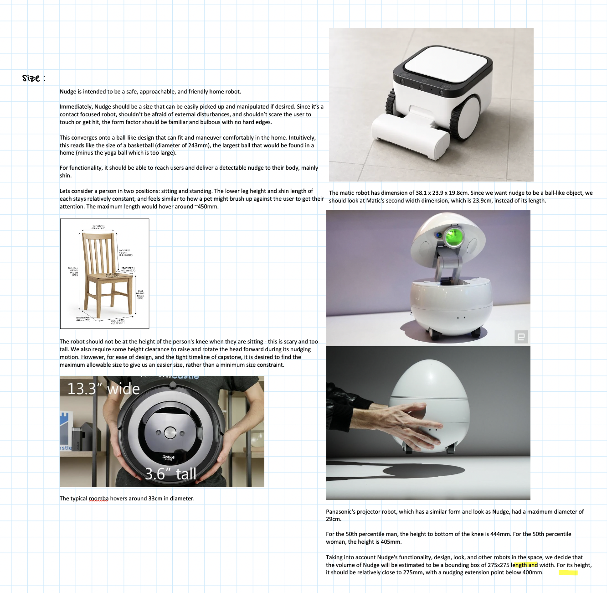
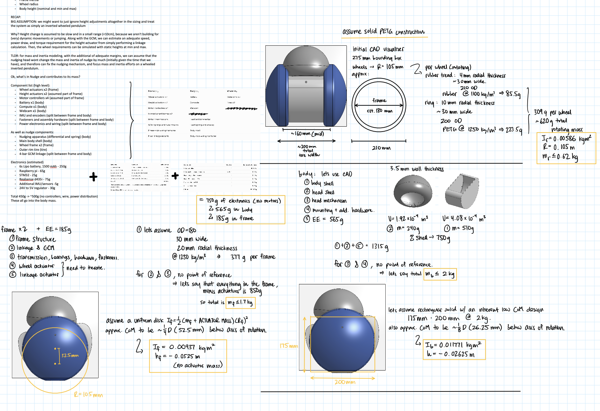
4.2 Defining the Loading Requirements
Two team-developed targets guided the simulations: a maximum travel speed of 1.58 m/s and a 12 N nudging force. The reasoning behind these requirements is covered on the official Capstone page ; here, I focused on translating them into actuator loads.
4.3 Estimating Peak Wheel Torque
For peak wheel torque, I used the expected reaction force during a nudge as the main loading case. When Nudge pushes against a person, the equal and opposite contact force acts as an external disturbance on the robot. I applied this disturbance in the MATLAB model and evaluated the wheel torque required to maintain balance.
I tested different LQR cost-function weights rather than relying on one controller setting. Pitch and displacement varied, and some configurations became unstable, but peak torque stayed near 2 N·m across both wheels (about 1 N·m each) in the successful test cases.
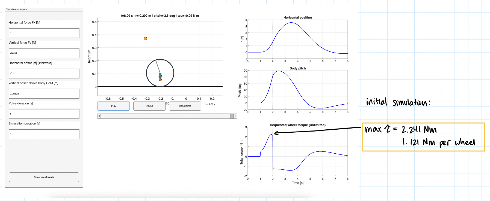
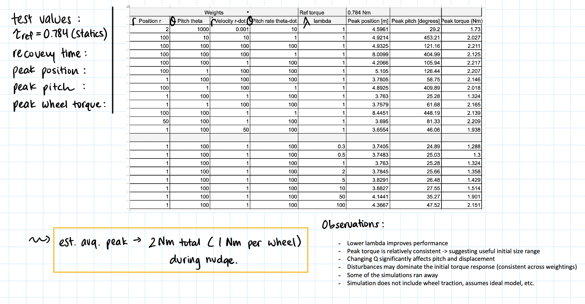
4.4 Estimating RMS Wheel Torque
Our current plan is for Nudge to tow Notice, the second robot in the Notify family, as they move around together. I therefore included towing and towing-related acceleration and braking in the representative operating cycle, using an assumed combined load of 10 kg. These are preliminary loading assumptions rather than measured towing requirements.
The resulting RMS estimate was 0.29 N·m across both wheels, or approximately 0.147 N·m per wheel.
| Operating state | Duration | Assumption |
|---|---|---|
| Nudging | 5 s | One nudge |
| Acceleration / braking | 4 s | 3 s acceleration + 1 s braking |
| Driving | 180 s | Travel at maximum speed |
| Towing Notice | 300 s | 10 kg assumed combined load |
| Towing acceleration / braking | 6 s | 3 s acceleration + 3 s braking |
| Total | 495 s | Idle torque assumed negligible in this cycle |
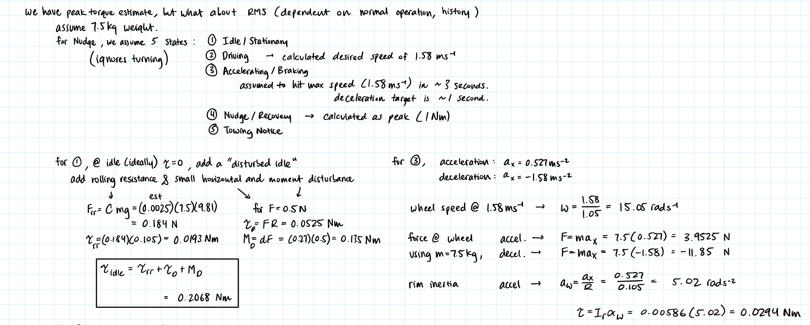
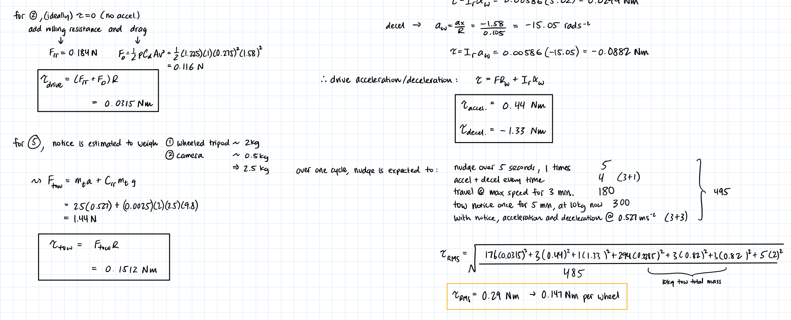
These estimates exclude friction, drivetrain losses, traction limits, and actuator saturation. They also depend on the assumed duty cycle, so they are preliminary sizing inputs rather than validated requirements.
5. Sizing the Height & Nudging Actuators
5.1 Proposed Height and Nudging Mechanism
Unlike the wheel actuators, the leg actuators had to do more than one job: support and adjust the body height, produce expressive movements, and help drive the nudging head. At this stage, we had not finalized either the leg linkage or how the head would connect to it, so I could not calculate a reliable torque profile from actual linkage geometry.
Our working concept was a four-bar or six-bar height mechanism with gravity compensation , coupled to a differential head linkage. Extending the two legs together would move the head upward and forward to nudge the user, while extending them by different amounts could tilt the head. We also intended to put a spring in series with the head so its deflection could be used to estimate contact force.
The head would likely follow an arc, but force sharing and mechanical advantage would depend on the final linkage geometry.


5.2 Estimating the Nudging and Gravity Loads
As with the wheel sizing, I used nudging as the peak loading case. Here, however, I estimated the torque the leg actuators would need to generate the target head contact force, rather than the wheel torque needed to resist its reaction. For this first estimate, I treated the head force as acting at the end of an equivalent lever arm. Our target was 12 N of contact force , but the direction of that force was not fixed. The horizontal and vertical components could create opposing moments about the mechanism, potentially reducing the net torque in some configurations. This was useful design flexibility, but not something I could count on without a defined linkage.
I therefore used an illustrative 8.5 N effective load at a 150 mm lever arm to establish the scale of the nudging demand. This was a working assumption rather than a proven worst case: a different contact direction, head position, or linkage mechanical advantage could increase or decrease the required motor torque. The 12 N contact target itself was also adjustable if necessary.
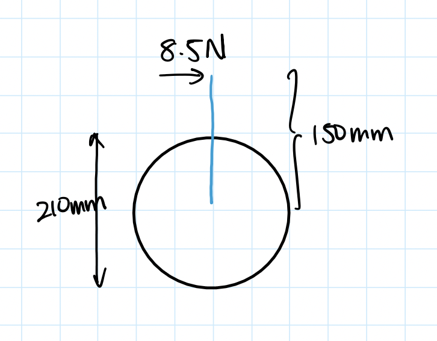
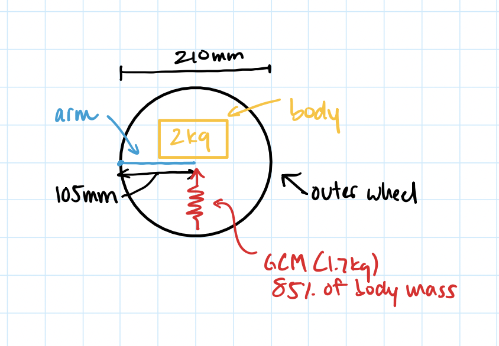
I then accounted for the weight of the body. I assumed that the gravity-compensation mechanism would offset approximately 85% of the supported body weight , leaving the actuators responsible for the remaining 15% . For a first-pass moment arm, I used the wheel radius as a simple upper-scale geometric reference, although the actual linkage lever arm would almost certainly be different. This 85% compensation figure was not based on a finished spring design; it was an explicit assumption that would need to be checked over the entire height range.
5.3 Peak and RMS Leg Torque
Using the assumed nudging load and equivalent lever arm from Section 5.2, the calculated peak torque was 0.85 N·m per actuator , before adding losses or safety margins. To estimate continuous loading, I also needed a representative duty cycle rather than assuming that the actuator would operate at its peak torque all the time.
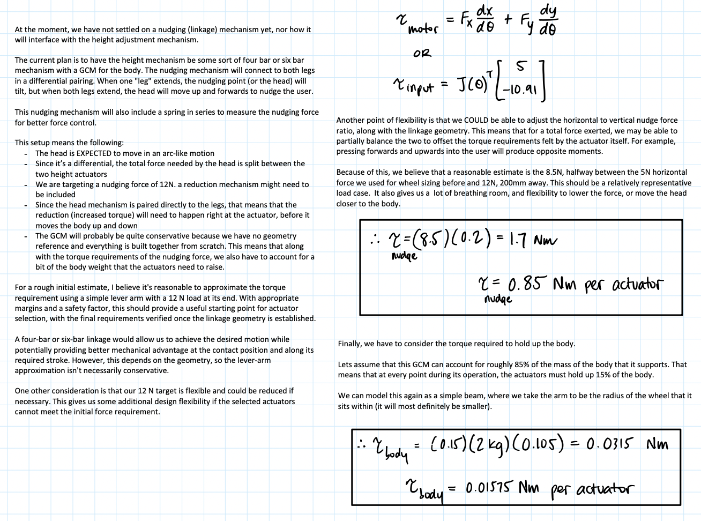
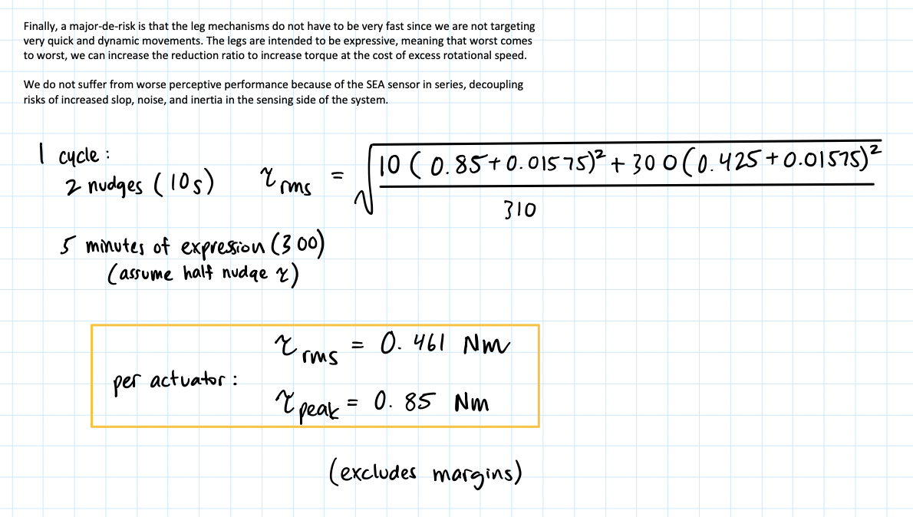
I used a simplified cycle consisting of two nudges over 10 seconds, followed by five minutes of expressive movement. For the expressive portion, I assumed roughly half the nudging torque demand. The handwritten calculation also includes a small additional holding-load term. These were deliberately simple assumptions, since neither the final mechanism nor its real usage pattern was established.
| Operating state | Duration | Assumed torque |
|---|---|---|
| Two nudges | 10 s | 0.85 + 0.01575 N·m |
| Expressive motion | 300 s | 0.425 + 0.01575 N·m |
| Total cycle | 310 s | Assumed repeatable duty cycle |
Weighting each state by its duration gave an estimated RMS torque of 0.461 N·m per leg actuator , before margins. This is useful for initial thermal screening, but it depends heavily on the assumed duty cycle and on the still-unverified holding-load estimate.
5.4 What the Estimates Could and Could Not Tell Us
The unresolved linkage remained the largest uncertainty: mechanical advantage and gravity compensation could change considerably through the stroke. These were not verified worst-case torques.
There was some room to adjust the design if the numbers proved too demanding. The head could potentially be brought closer to the body, the contact-force direction or target could change, and the leg transmission ratio could be increased. Because Nudge was intended to make relatively slow expressive height adjustments rather than jump or move dynamically, trading some speed for additional torque was a reasonable option. The series spring would also provide a way to estimate head contact force, although it would not eliminate backlash, friction, compliance, or sensing errors elsewhere in the mechanism.
5.5 Summary of Theoretical Torque Requirements
For initial actuator screening, I applied a safety factor of 2 to the theoretical peak and RMS torque estimates. All values below are positive torque magnitudes, per actuator.
| Actuator | Peak torque (SF = 2) | RMS torque (SF = 2) |
|---|---|---|
| Wheel (each) | 2.00 N·m | 0.294 N·m |
| Leg (each) | 1.70 N·m | 0.922 N·m |
This factor is a preliminary allowance for uncertain masses and linkage geometry, unmodeled friction and mechanical losses, idealized disturbances, and other non-ideal behaviour . It is not a measured efficiency or a substitute for checking torque–speed curves, thermal limits, traction, and the eventual mechanism.
6. From Theoretical Torque to Motor Selection
With the theoretical torque requirements established, a motor needed to be chosen for both the wheels and the height-adjustment mechanisms. We preferred four identical actuators to simplify sourcing, packaging, software, and spares, even if that meant oversizing one application.
Why Direct Drive?
Our torque requirements made direct drive a realistic option. Without a gearbox, motor position corresponds directly to joint position, with no gearbox backlash or transmission compliance to account for. That is particularly useful for the legs, where backdrivability and predictable torque control matter. Just as importantly, it avoids designing and integrating four gearboxes. The tradeoff is a larger motor that must produce the full joint torque at the required speed.
Selecting the GB7215
I selected the SteadyWin GB7215 , an enclosed, flat BLDC gimbal motor, as our leading candidate. Its published ratings can be compared directly against the torque requirements from Section 5, which already include a safety factor of two.
| Requirement | Wheel | Leg | GB7215 rating |
|---|---|---|---|
| Peak torque | 2.00 N·m | 1.70 N·m | 3.70 N·m |
| RMS / rated torque | 0.294 N·m | 0.922 N·m | 1.20 N·m rated |
| Peak current | 4.88 A | 4.15 A | 16.0 A peak |
| RMS / rated current | 0.72 A | 2.25 A | 2.90 A rated |
The current estimates use the manufacturer’s torque constant of 0.41 N·m/A and \(I=\tau/K_t\), assuming consistent current definitions. The closest continuous-duty case is the leg: its estimated 0.922 N·m RMS is about 77% of the motor’s 1.20 N·m rated torque . The wheel’s 2.00 N·m peak is about 54% of the advertised 3.70 N·m peak.
Speed also fits on paper. At our target travel speed of 1.58 m/s with 210 mm diameter wheels, direct drive requires approximately 144 RPM , below the motor’s rated 354 RPM and peak 516 RPM. These separate torque and speed ratings are encouraging, but they do not establish the available torque at every speed or the allowable duration of peak loading. The leg’s maximum required speed also depends on the final linkage geometry.
The GB7215 matches our 24 V system, and its enclosed, flat construction is convenient for the internal wheel frames. We still need to account for the output mounting and bearing loads; an enclosed motor does not automatically mean its bearings can carry every external wheel load.
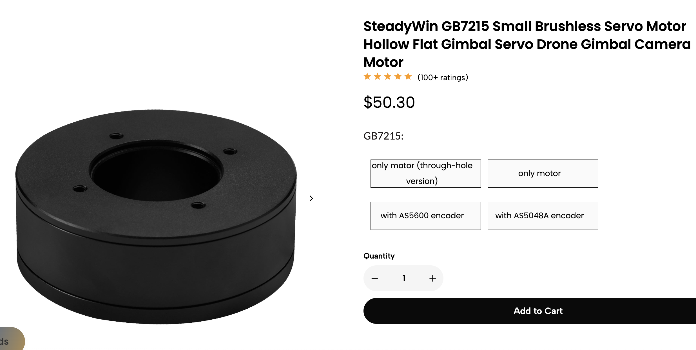
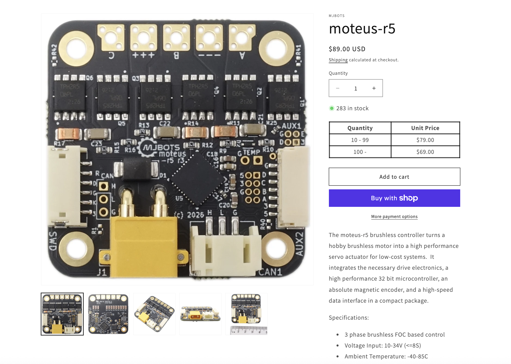
Controller and Practical Integration
We chose the moteus r5 for field-oriented control, encoder support, and a well-documented development workflow. Our previous experience with proprietary motor-controller firmware, particularly MyActuator, involved more time than we wanted to spend on documentation and communication issues. Using one motor-controller combination across all four joints should make integration and troubleshooting more straightforward.
Because the capstone schedule leaves little room for a separate motor-validation phase, we plan to purchase five GB7215 motors and five moteus r5 controllers : four for Nudge and one spare set.
Thermal Considerations and Selection
The main remaining concern is continuous heating in the legs, particularly when holding position at low speed. The motor’s 1.20 N·m rated torque exceeds our estimated 0.922 N·m RMS requirement, but the manufacturer’s rating depends on its test and cooling conditions. A teammate is exploring whether the wheel design can move air around the motors; that could help while driving, but cannot be assumed to provide sufficient cooling when stationary. Heat conduction through the motor housing and frame will matter as well.
On the information available before purchasing, the GB7215 offers a practical combination of torque, speed, current demand, and packaging without a gearbox. We are treating it as our selected prototype motor, while recognizing that the manufacturer’s ratings are not a substitute for performance in the assembled robot.
7. Limitations and Next Steps
This work was completed before purchasing or building the actuator assemblies. The requirements come from simplified models, estimated mass properties, assumed nudging loads, and an expected duty cycle, so the resulting torque margins should be treated as design estimates rather than measured performance.
- Motor capability: Rated and peak torque exceed our estimates, but torque available at speed, peak duration, and thermal conditions remain unverified.
- Mechanical model: Final masses, linkage mechanical advantage, friction, and gravity compensation may change the actual torque demands.
- Integration: Encoder alignment, motor mounting, bearing loads, and cooling depend on the final wheel assembly.
Before purchasing the actuators and motor controllers, a teammate did also run a simple CAD model in MuJoCo to verify the numbers, and calculated lower torque estimates than what was shown in this post.
Given our timeline, we will move directly into procurement and integration rather than run a full characterization program first. The purpose of the modeling was to narrow the uncertainty enough to make a defensible hardware decision before building; the prototype will ultimately show where those assumptions need to be revised.
On to building!